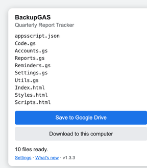
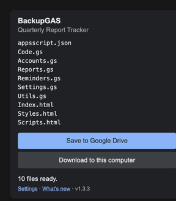

Back up the Apps Script code Google gives you no way to download — including scripts attached to a Sheet, Doc or Form.
one — the problem
A script attached to a spreadsheet isn't a Drive file, so Drive can't export it. The editor has no download button. That leaves the Apps Script API — which wants a Google Cloud project, and plenty of managed accounts aren't allowed to make one.
Ever seen Apps Script API has not been used in project NNNN before or it is disabled, with no way to fix it? That dead end is what this is for.
two — what it looks like


every file, under its own name — light or dark, like your editor
three — install
chrome://extensions.Open the script — from a Sheet that's Extensions → Apps Script — let it load, click the icon, and choose Download to this computer or Save to Google Drive. Files land under Apps Script Backups, one per script file, real names kept.
four — straight to drive
An extension can't write to Drive without a Cloud project — the same wall this tool exists to dodge. So it hands the files to a small Apps Script web app that you deploy, and that writes them to your own Drive.
receiver/Code.gs, save./exec address it gives you, copy the setup line it shows.About that password. The receiver makes one itself and shows it once, on the first visit. It turns away anything without it, only ever creates files, and writes only inside its own backup folder.
five — the trick
The Apps Script editor is a Monaco editor, and it already holds every file of the open project — that's what's on your screen. Each entry in the file list carries a data-res-id that matches a Monaco model, so the extension pairs each name with its contents and lifts the text straight off the page.
No API, no Cloud project, no admin. It also means a backup holds exactly what the editor shows, unsaved edits and all.
scripting — read the file list and contents from the open editor tabdownloads — save files to your Downloads folderstorage — remember your receiver address and passwordscript.google.com — the only site it runs onNo analytics, no servers. Nothing leaves your machine but the files you send to your own receiver.